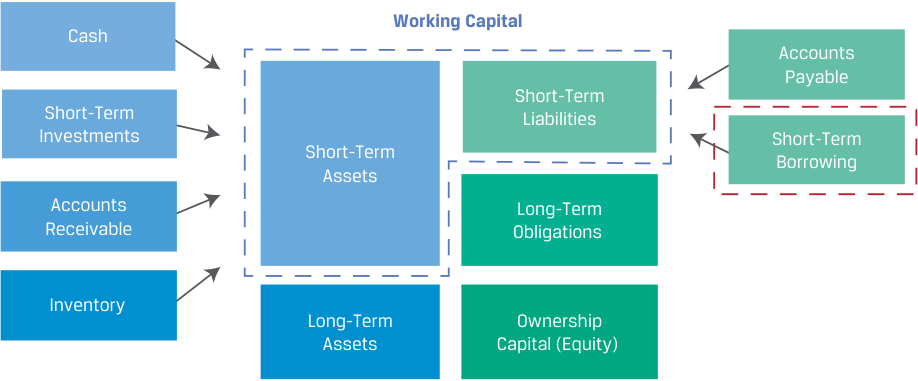
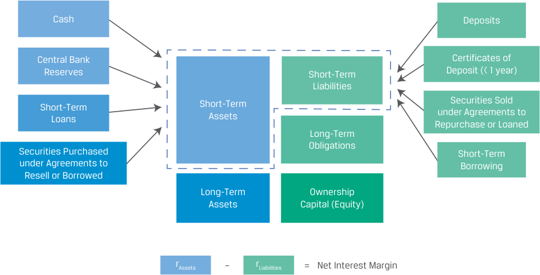
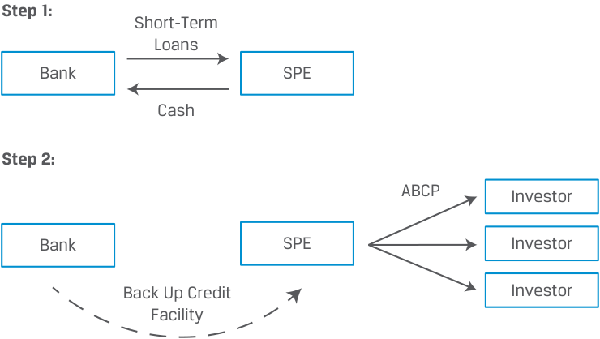

Learning Module 4 Fixed-Income Markets for Corporate Issuers - Part 1: Introduction
Volume 6: Fixed Income
Learning Module 4 Fixed-Income Markets for Corporate Issuers
Part 1/3: Introduction (PDF Pages 89–97)
Tập 6: Chứng Khoán Thu Nhập Cố Định (Fixed Income)
Học Phần 4: Thị Trường Thu Nhập Cố Định Cho Các Tổ Chức Phát Hành Doanh Nghiệp (Fixed-Income Markets for Corporate Issuers)
Phần 1/3: Giới Thiệu (Trang PDF 89–97)
L E A R N I N G M O D U L E 4
H Ọ C P H Ầ N 4
Fixed-Income Markets for Corporate Issuers
Thị Trường Thu Nhập Cố Định Cho Các Tổ Chức Phát Hành Doanh Nghiệp (Fixed-Income Markets for Corporate Issuers)
LEARNING OUTCOMES
MỤC TIÊU HỌC TẬP (LEARNING OUTCOMES)
| Mastery | The candidate should be able to: |
|---|---|
| compare short-term funding alternatives available to corporations and financial institutions |
|
| describe repurchase agreements (repos), their uses, and their benefits and risks |
|
| i contrast the long-term funding of investment-grade versus high-yield corporate issuers |
| Mức độ thành thạo | Ứng viên cần có khả năng: |
|---|---|
| So sánh các phương thức tài trợ ngắn hạn (short-term funding alternatives) sẵn có đối với các doanh nghiệp và các định chế tài chính | |
| Mô tả các hợp đồng mua lại (repurchase agreements – repos), công dụng của chúng, cũng như các lợi ích và rủi ro của chúng | |
| Phân biệt hoạt động tài trợ dài hạn (long-term funding) của các tổ chức phát hành doanh nghiệp hạng đầu tư (investment-grade) so với hạng lợi suất cao (high-yield) |
INTRODUCTION
GIỚI THIỆU (INTRODUCTION)
1
1
Previous modules described various types of fixed-income issuers and investors. In this module, we focus on the corporate fixed-income sector, composed of instruments issued by financial institutions and non-financial corporate issuers across the time-to-maturity and credit spectrums. These instruments account for a significant portion of total debt issuance and debt outstanding globally.
Các học phần trước đã mô tả nhiều loại hình tổ chức phát hành và nhà đầu tư thu nhập cố định khác nhau. Trong học phần này, chúng ta tập trung vào khu vực thu nhập cố định doanh nghiệp (corporate fixed-income sector), bao gồm các công cụ được phát hành bởi các định chế tài chính (financial institutions) và các tổ chức phát hành doanh nghiệp phi tài chính (non-financial corporate issuers) trải rộng qua phổ thời gian đáo hạn và phổ tín dụng. Những công cụ này chiếm một tỷ trọng đáng kể trong tổng khối lượng phát hành nợ và dư nợ đang lưu hành trên toàn cầu.
LEARNING MODULE OVERVIEW
TỔNG QUAN HỌC PHẦN (LEARNING MODULE OVERVIEW)
-
Non-financial corporations frequently use short-term external funding in the form of bank loans and securities, such as commercial paper to meet cash needs.
-
■ Financial institutions rely on deposits, interbank markets, commercial paper, and repurchase agreements (repos) as primary sources of shortterm funding.
-
■ Commercial paper is a short-term unsecured promissory note issued by both financial institutions and non-financial corporations.
-
■ A repurchase agreement (repo) is a form of short-term secured lending that involves the sale and simultaneous agreement to buy back a security at a pre-agreed future price.
-
Các tập đoàn phi tài chính thường xuyên sử dụng nguồn tài trợ bên ngoài ngắn hạn dưới hình thức các khoản vay ngân hàng và chứng khoán, chẳng hạn như thương phiếu (commercial paper) để đáp ứng nhu cầu tiền mặt.
-
Các định chế tài chính dựa vào tiền gửi (deposits), thị trường liên ngân hàng (interbank markets), thương phiếu (commercial paper), và các hợp đồng mua lại (repurchase agreements – repos) làm các nguồn tài trợ ngắn hạn chính.
-
Thương phiếu (commercial paper) là một kỳ phiếu nhận nợ ngắn hạn không có đảm bảo (short-term unsecured promissory note) được phát hành bởi cả các định chế tài chính và các tập đoàn phi tài chính.
-
Một hợp đồng mua lại (repurchase agreement – repo) là một hình thức cho vay ngắn hạn có đảm bảo (short-term secured lending) bao gồm việc bán và thỏa thuận đồng thời sẽ mua lại một chứng khoán ở một mức giá tương lai đã được thỏa thuận trước.
-
An investment-grade bond has a significant proportion of its yield-to-maturity (YTM) attributed to the government benchmark yield due to its strong ability to meet promised interest and principal obligations from operating cash flows.
-
High-yield issuers are characterized by a higher expected likelihood of financial distress. Relative to investment-grade bonds, a higher proportion of their bonds’ YTM is attributed to an issuer-specific spread over the government benchmark yield.
-
Một trái phiếu hạng đầu tư (investment-grade bond) có một tỷ trọng đáng kể trong lợi suất đáo hạn (YTM) của nó được quy cho lợi suất chuẩn của chính phủ (government benchmark yield) do khả năng mạnh mẽ của tổ chức phát hành trong việc đáp ứng các nghĩa vụ lãi và vốn gốc đã cam kết từ dòng tiền hoạt động.
-
Các tổ chức phát hành lợi suất cao (high-yield issuers) được đặc trưng bởi khả năng kỳ vọng rơi vào tình trạng kiệt quệ tài chính (financial distress) cao hơn. So với trái phiếu hạng đầu tư, một tỷ trọng cao hơn trong YTM của trái phiếu của họ được quy cho phần chênh lệch đặc thù theo tổ chức phát hành (issuer-specific spread) cao hơn lợi suất chuẩn của chính phủ.
LEARNING MODULE SELF-ASSESSMENT
TỰ ĐÁNH GIÁ HỌC PHẦN (LEARNING MODULE SELF-ASSESSMENT)
These initial questions are intended to help you gauge your current level of understanding of this learning module.
Những câu hỏi ban đầu này nhằm mục đích giúp bạn tự đánh giá mức độ hiểu biết hiện tại của mình về học phần này.
- Which of the following financing instruments provides the most reliable source of short-term bank funding for a non-financial corporation?
-
A. Revolving credit agreement
-
B. Committed bank line of credit
-
C. Uncommitted bank line of credit
- Công cụ tài trợ nào sau đây cung cấp nguồn tài trợ ngân hàng ngắn hạn đáng tin cậy nhất cho một tập đoàn phi tài chính?
-
A. Thỏa thuận tín dụng quay vòng (Revolving credit agreement)
-
B. Hạn mức tín dụng ngân hàng có cam kết (Committed bank line of credit)
-
C. Hạn mức tín dụng ngân hàng không cam kết (Uncommitted bank line of credit)
Solution:
Lời giải:
A is correct. Revolving credit agreements, also referred to as revolvers, are the most reliable source of short-term bank funding.
A là đáp án đúng. Các thỏa thuận tín dụng quay vòng (revolving credit agreements), còn được gọi là revolvers, là nguồn tài trợ ngân hàng ngắn hạn đáng tin cậy nhất.
B is incorrect. While committed lines of credit are a more reliable source of financing than uncommitted lines because they involve a formal written commitment, they are less reliable than revolvers. C is incorrect because uncommitted bank lines of credit are the least reliable form of bank borrowing for a company.
B không đúng. Mặc dù các hạn mức tín dụng có cam kết là nguồn tài trợ đáng tin cậy hơn so với các hạn mức không cam kết bởi vì chúng bao gồm một cam kết chính thức bằng văn bản, nhưng chúng vẫn kém tin cậy hơn so với tín dụng quay vòng (revolvers). C không đúng vì các hạn mức tín dụng ngân hàng không cam kết là hình thức vay ngân hàng kém tin cậy nhất đối với một công ty.
- Identify the following statement as true or false. Justify your answer.
- Xác định phát biểu sau đây là đúng hay sai. Giải thích câu trả lời của bạn.
In an unsecured loan, the lender requires the company to provide collateral in the form of an asset that is pledged against the loan.
Trong một khoản vay không có đảm bảo (unsecured loan), bên cho vay yêu cầu công ty cung cấp tài sản thế chấp dưới hình thức một tài sản được cầm cố/thế chấp cho khoản vay đó.
Solution:
Lời giải:
False. Secured loans are loans in which the lender requires the company to provide collateral in the form of an asset, such as a fixed asset that the company owns or high-quality receivables or inventory. These assets are pledged against the loan, and the lender files a security interest against them. This pledge or lien is added to the borrowing company’s financial record and reflected on its credit report. Companies that lack sufficient credit quality to qualify for unsecured loans may attempt to obtain secured loans.
Sai (False). Các khoản vay có đảm bảo (secured loans) mới là các khoản vay trong đó bên cho vay yêu cầu công ty cung cấp tài sản thế chấp dưới hình thức một tài sản, chẳng hạn như tài sản cố định thuộc sở hữu của công ty hoặc các khoản phải thu hay hàng tồn kho chất lượng cao. Những tài sản này được thế chấp cho khoản vay, và bên cho vay đăng ký quyền lợi đảm bảo (security interest) đối với chúng. Việc cầm cố hay quyền nắm giữ tài sản (pledge or lien) này được bổ sung vào hồ sơ tài chính của công ty đi vay và được phản ánh trên báo cáo tín dụng của công ty. Các công ty không có đủ chất lượng tín dụng để đủ điều kiện nhận các khoản vay không có đảm bảo có thể tìm cách tiếp cận các khoản vay có đảm bảo.
- Relative to long-term debt and equity, repo funding provides which of the following benefits to a financial institution?
-
A. Lower cost
-
B. Longer-term financing
-
C. Greater financial flexibility
- So với nợ dài hạn và vốn chủ sở hữu, nguồn tài trợ từ hợp đồng mua lại (repo funding) mang lại lợi ích nào sau đây cho một định chế tài chính?
-
A. Chi phí thấp hơn (Lower cost)
-
B. Tài trợ dài hạn hơn (Longer-term financing)
-
C. Sự linh hoạt tài chính lớn hơn (Greater financial flexibility)
Solution:
Lời giải:
A is correct. Financial institutions must balance the low cost of repo funding with the greater financial flexibility of more costly longer-term financing al-
A là đáp án đúng. Các định chế tài chính phải cân bằng giữa chi phí thấp của nguồn tài trợ repo với sự linh hoạt tài chính lớn hơn của các phương thức tài trợ dài hạn
| ternatives, such as long-term debt and equity. B and C are incorrect because they are both benefits of long-term debt and equity. |
|---|
| 4. Venus, Inc., a financial institution, and Bank A, a large regional bank, enter into a repurchase agreement in which Venus is the security seller and Bank A is the security buyer. The repo is subject to a 102% initial margin. Which of the following statements is correct? |
| A.Bank A benefits from a long-term cash investment on a collateralized basis with minimal liquidity risk. |
B.Bank A could generate higher returns for longer repo terms and/or by accepting less liquid or lower-quality collateral. |
| C.The repo transaction reduces Venus’s funding requirement for the security to a fraction of the bond’s purchase price. Solution: |
| B is correct. Short-term repos with high-quality collateral (lowest risk) result in the lowest return; however, investors can expect higher returns for longer repo terms and/or by accepting less liquid or lower quality collateral. A is incorrect because Bank A benefits from a short-term (not long-term) cash investment on a collateralized basis with minimal liquidity risk. |
| C is incorrect because the repo transaction reduces Bank A’s (not Venus’s) funding requirement for the security to a fraction of the bond’s purchase price due to the 102% initial margin. |
| 5. An investor is analyzing three bonds for a potential investment: a AA rated bond, a B rated bond, and a CCC rated bond. Which of the bonds is_most_ _appropriate_if the investor is seeking safety with few issuer restrictions? A.AA rated bond |
| B.B rated bond C.CCC rated bond Solution: |
| A is correct. The AA rated bond is investment grade with low likelihood of default and minimal issuer restrictions. B and C are incorrect because the B rated and CCC rated bonds are considered high yield with equity-like risk attributes and often greater issuer restrictions. |
| 6. A bond analyst would_most likely_consider the probability of default and loss given default for: |
| A.an investment-grade bond because of its equity-like cash flow. |
| l B.a high-yield bond because of its higher expected likelihood of financial distress. |
| C.an investment-grade bond because of the importance of financial ratios and credit ratings to determine the issuer’s likelihood of default. Solution: |
| B is correct. High-yield issuers are characterized by a higher expected likelihood of financial distress. Given the higher chance of default, these instruments are more equity-like in nature and analysts place a greater em- phasis on the likelihood (probability) of default, potential loss given default, and the protections and secondary repayment sources that are available. A is incorrect because investment-grade bonds exhibit bond-like cash flows, |
tốn kém hơn, chẳng hạn như nợ dài hạn và vốn chủ sở hữu. B và C không đúng vì cả hai đều là lợi ích của nợ dài hạn và vốn chủ sở hữu.
- Venus, Inc., một định chế tài chính, và Ngân hàng A, một ngân hàng khu vực lớn, ký kết một hợp đồng mua lại (repurchase agreement) trong đó Venus là bên bán chứng khoán và Ngân hàng A là bên mua chứng khoán. Hợp đồng repo này chịu mức ký quỹ ban đầu (initial margin) là 102%. Phát biểu nào sau đây là đúng? - A. Ngân hàng A hưởng lợi từ một khoản đầu tư tiền mặt dài hạn trên cơ sở có tài sản thế chấp với rủi ro thanh khoản tối thiểu. - B. Ngân hàng A có thể tạo ra tỷ suất sinh lợi cao hơn với các kỳ hạn repo dài hơn và/hoặc bằng cách chấp nhận tài sản thế chấp kém thanh khoản hơn hoặc có chất lượng thấp hơn. - C. Giao dịch repo làm giảm nhu cầu tài trợ của Venus đối với chứng khoán xuống còn một phần nhỏ trong giá mua trái phiếu.
- Lời giải:
B là đáp án đúng. Các hợp đồng repo ngắn hạn với tài sản thế chấp chất lượng cao (rủi ro thấp nhất) mang lại tỷ suất sinh lợi thấp nhất; tuy nhiên, các nhà đầu tư có thể kỳ vọng tỷ suất sinh lợi cao hơn đối với các kỳ hạn repo dài hơn và/hoặc bằng cách chấp nhận tài sản thế chấp kém thanh khoản hơn hoặc có chất lượng thấp hơn.
A không đúng vì Ngân hàng A hưởng lợi từ một khoản đầu tư tiền mặt ngắn hạn (chứ không phải dài hạn) trên cơ sở có tài sản thế chấp với rủi ro thanh khoản tối thiểu.
C không đúng vì giao dịch repo làm giảm nhu cầu tài trợ của bên đi vay tiền / bên mua chứng khoán mới bằng vốn tự có (tức Venus vẫn phải tự tài trợ phần chênh lệch ký quỹ ban đầu 2%, còn bản thân giao dịch repo tài trợ phần lớn giá mua chứng khoán chứ không phải giảm nhu cầu tài trợ của Ngân hàng A hay giảm xuống chỉ còn một phần nhỏ nhờ mức ký quỹ 102%). (Lưu ý theo giải thích gốc của CFA: C bị coi là sai do diễn đạt nhầm vai trò/tác động của mức ký quỹ 102%).
- Một nhà đầu tư đang phân tích ba trái phiếu cho một khoản đầu tư tiềm năng: một trái phiếu xếp hạng AA, một trái phiếu xếp hạng B, và một trái phiếu xếp hạng CCC. Trái phiếu nào là phù hợp nhất nếu nhà đầu tư đang tìm kiếm sự an toàn với ít hạn chế đối với tổ chức phát hành? - A. Trái phiếu xếp hạng AA - B. Trái phiếu xếp hạng B - C. Trái phiếu xếp hạng CCC
- Lời giải:
A là đáp án đúng. Trái phiếu xếp hạng AA thuộc hạng đầu tư (investment grade) với khả năng vỡ nợ thấp và các hạn chế tối thiểu đối với tổ chức phát hành. B và C không đúng vì trái phiếu xếp hạng B và xếp hạng CCC được coi là trái phiếu lợi suất cao (high yield) với các thuộc tính rủi ro giống như cổ phiếu và thường có các hạn chế lớn hơn đối với tổ chức phát hành.
- Một chuyên gia phân tích trái phiếu sẽ nhiều khả năng nhất xem xét xác suất vỡ nợ (probability of default) và mức tổn thất khi vỡ nợ (loss given default) đối với: - A. một trái phiếu hạng đầu tư bởi vì dòng tiền giống như cổ phiếu của nó. - B. một trái phiếu lợi suất cao bởi vì khả năng kỳ vọng rơi vào tình trạng kiệt quệ tài chính cao hơn của nó. - C. một trái phiếu hạng đầu tư bởi vì tầm quan trọng của các tỷ số tài chính và xếp hạng tín dụng nhằm xác định khả năng vỡ nợ của tổ chức phát hành.
- Lời giải:
B là đáp án đúng. Các tổ chức phát hành lợi suất cao được đặc trưng bởi khả năng kỳ vọng rơi vào tình trạng kiệt quệ tài chính cao hơn. Do khả năng vỡ nợ cao hơn, những công cụ này có bản chất giống như cổ phiếu hơn và các chuyên gia phân tích đặt trọng tâm lớn hơn vào khả năng (xác suất) vỡ nợ, mức tổn thất tiềm tàng khi vỡ nợ, cũng như các biện pháp bảo vệ và các nguồn trả nợ thứ cấp hiện có. A không đúng vì trái phiếu hạng đầu tư thể hiện các dòng tiền giống như trái phiếu tiêu chuẩn,
for which there is a high probability of receiving the agreed-upon interest and principal payments. C is incorrect because investment-grade bond analysts use financial ratios and credit ratings to determine if and when an investment-grade issuer’s likelihood of default will change and don’t rely on probability of default or loss given default measures.
đối với chúng có xác suất cao sẽ nhận được các khoản thanh toán lãi và vốn gốc đã thỏa thuận. C không đúng vì các chuyên gia phân tích trái phiếu hạng đầu tư sử dụng các tỷ số tài chính và xếp hạng tín dụng để xác định xem liệu và khi nào khả năng vỡ nợ của một tổ chức phát hành hạng đầu tư sẽ thay đổi chứ không dựa vào các thước đo xác suất vỡ nợ hay mức tổn thất khi vỡ nợ trực tiếp như đối với nợ lợi suất cao.
2
2
SHORT-TERM FUNDING ALTERNATIVES
CÁC PHƯƠNG THỨC TÀI TRỢ NGẮN HẠN (SHORT-TERM FUNDING ALTERNATIVES)
compare short-term funding alternatives available to corporations and financial institutions
Mục tiêu: So sánh các phương thức tài trợ ngắn hạn sẵn có đối với các doanh nghiệp và các định chế tài chính.
Both non-financial corporations and financial institutions rely on borrowed capital to support their short-term activities. As discussed in an earlier module in the corporate issuers reading, corporations use external short-term financing to meet cash needs during their cash conversion cycle, preserve liquidity, and take advantage of supplier discounts.
Cả các tập đoàn phi tài chính và các định chế tài chính đều dựa vào nguồn vốn vay để hỗ trợ các hoạt động ngắn hạn của mình. Như đã thảo luận trong học phần trước ở bài đọc về các tổ chức phát hành doanh nghiệp, các tập đoàn sử dụng nguồn tài trợ ngắn hạn bên ngoài để đáp ứng nhu cầu tiền mặt trong chu kỳ chuyển đổi tiền mặt (cash conversion cycle), duy trì tính thanh khoản, và tận dụng các khoản chiết khấu thanh toán sớm từ nhà cung cấp (supplier discounts).
Non-financial corporate sources and uses of short-term funding are summarized in Exhibit 1.
Các nguồn và mục đích sử dụng tài trợ ngắn hạn của doanh nghiệp phi tài chính được tóm tắt trong Bảng minh họa 1 (Exhibit 1).
Exhibit 1: Sources and Uses of Short-Term Funding for Non-Financial Corporates
Bảng minh họa 1: Các Nguồn và Mục đích Sử dụng Tài trợ Ngắn hạn đối với Doanh nghiệp Phi Tài chính (Sources and Uses of Short-Term Funding for Non-Financial Corporates)

Chú thích hình ảnh: Vốn lưu động (Working Capital) trên Bảng cân đối kế toán: - Tài sản ngắn hạn (Short-Term Assets): Tiền mặt (Cash), Đầu tư ngắn hạn (Short-Term Investments), Phải thu khách hàng (Accounts Receivable), Hàng tồn kho (Inventory). (Bên dưới là Tài sản dài hạn – Long-Term Assets). - Nợ ngắn hạn (Short-Term Liabilities): Phải trả người bán (Accounts Payable), Vay ngắn hạn (Short-Term Borrowing). (Bên dưới là Nghĩa vụ nợ dài hạn – Long-Term Obligations và Vốn chủ sở hữu – Ownership Capital / Equity).
External Loan Financing
Tài trợ bằng Khoản vay Bên ngoài (External Loan Financing)
Non-financial corporations often rely on financial intermediaries for short-term financing. Common instruments include
Các tập đoàn phi tài chính thường dựa vào các định chế tài chính trung gian để tài trợ ngắn hạn. Các công cụ phổ biến bao gồm:
-
uncommitted bank lines of credit,
-
committed bank lines of credit, and
-
revolving credit agreements, or revolvers.
-
hạn mức tín dụng ngân hàng không cam kết (uncommitted bank lines of credit),
-
hạn mức tín dụng ngân hàng có cam kết (committed bank lines of credit), và
-
thỏa thuận tín dụng quay vòng (revolving credit agreements hay revolvers).
These can be unsecured or secured, depending on a company’s financial strength, general credit situation, and jurisdiction. Uncommitted lines and revolvers are used more frequently in the United States, whereas regular committed lines are more common elsewhere. Credit lines typically offer the most flexible and immediate access to short-term funding.
Những công cụ này có thể là không có đảm bảo hoặc có đảm bảo, tùy thuộc vào sức mạnh tài chính, tình hình tín dụng chung của công ty và khu vực tài phán. Các hạn mức không cam kết và tín dụng quay vòng (revolvers) được sử dụng thường xuyên hơn tại Hoa Kỳ, trong khi các hạn mức có cam kết thông thường lại phổ biến hơn ở những nơi khác. Các hạn mức tín dụng thường mang lại khả năng tiếp cận linh hoạt nhất và tức thời nhất đối với nguồn tài trợ ngắn hạn.
Lines of Credit
Các hạn mức tín dụng (Lines of Credit)
Uncommitted lines of credit are the least reliable form of bank borrowing for a company, as the name suggests. A bank offers uncommitted credit lines up to a certain principal amount (“credit line”) for a pre-determined maximum maturity, charging a base or market reference rate (MRR) plus an issuer-specific spread on only the principal outstanding for the period of use. Under normal business conditions, companies often find uncommitted bank credit lines to be the most flexible and least costly means of external funding. Banks usually offer these lines on an unsecured basis to clients who maintain stable cash deposits at the bank, allowing the banks to closely monitor and react to adverse borrower developments, such as declining account balances. Uncommitted credit lines require minimal capital reserves until they are drawn down and used, but banks reserve the right to refuse to honor any request for use of the line. Firms cannot therefore rely on uncommitted lines as a primary source of funding, because banks may choose not to lend if business or economic conditions deteriorate. Alternative funding sources may be difficult to obtain or are prohibitively expensive at times when uncommitted funding becomes unavailable. The primary attraction of uncommitted lines is that they do not require the company to pay any compensation other than interest on balances outstanding to the bank. From a bank perspective, these uncommitted lines of credit serve as valuable tools to maintain a long-term business relationship with the borrower through which the bank can monitor borrower activity. Funding for these lines often comes from stable deposits that the bank holds, allowing it to finance these lines using funds that depositors do not regularly touch.
Hạn mức tín dụng không cam kết (uncommitted lines of credit) là hình thức vay ngân hàng kém tin cậy nhất đối với một công ty, đúng như tên gọi của nó. Một ngân hàng cung cấp các hạn mức tín dụng không cam kết lên đến một số tiền vốn gốc nhất định (“hạn mức tín dụng”) trong một kỳ hạn tối đa được xác định trước, tính lãi suất cơ sở hoặc lãi suất tham chiếu thị trường (MRR) cộng với một phần chênh lệch đặc thù theo tổ chức phát hành chỉ trên phần dư nợ gốc thực tế đang sử dụng trong khoảng thời gian sử dụng. Trong điều kiện kinh doanh bình thường, các công ty thường thấy hạn mức tín dụng ngân hàng không cam kết là phương tiện tài trợ bên ngoài linh hoạt nhất và ít tốn kém nhất. Các ngân hàng thường cung cấp các hạn mức này trên cơ sở không có đảm bảo cho những khách hàng duy trì lượng tiền gửi ổn định tại ngân hàng, cho phép ngân hàng giám sát chặt chẽ và phản ứng kịp thời trước những diễn biến bất lợi của bên đi vay, chẳng hạn như số dư tài khoản sụt giảm. Các hạn mức tín dụng không cam kết đòi hỏi mức dự trữ vốn tối thiểu cho đến khi chúng được rút vốn và sử dụng, nhưng các ngân hàng bảo lưu quyền từ chối thực hiện bất kỳ yêu cầu sử dụng hạn mức nào. Do đó, các doanh nghiệp không thể dựa vào các hạn mức không cam kết làm nguồn tài trợ chính, bởi vì các ngân hàng có thể chọn không cho vay nếu điều kiện kinh doanh hoặc kinh tế xấu đi. Các nguồn tài trợ thay thế có thể khó đạt được hoặc đắt đỏ đến mức không thể tiếp cận vào những thời điểm khi nguồn tài trợ không cam kết trở nên không còn sẵn có. Sự hấp dẫn chính của các hạn mức không cam kết là chúng không yêu cầu công ty phải trả bất kỳ khoản thù lao nào ngoài tiền lãi tính trên số dư nợ đang lưu hành cho ngân hàng. Dưới góc độ của ngân hàng, những hạn mức tín dụng không cam kết này đóng vai trò là công cụ có giá trị để duy trì mối quan hệ kinh doanh lâu dài với bên đi vay, qua đó ngân hàng có thể giám sát hoạt động của bên đi vay. Nguồn vốn cho các hạn mức này thường đến từ các khoản tiền gửi ổn định mà ngân hàng nắm giữ, cho phép ngân hàng tài trợ cho các hạn mức này bằng cách sử dụng nguồn tiền mà người gửi tiền không thường xuyên đụng tới.
Committed (regular) lines of credit are a more reliable source of financing than uncommitted lines because they involve a formal written commitment. Committed lines require more bank capital than uncommitted lines, although commitments of less than a year (usually 364 days) minimize a bank’s capital requirement. For larger corporate borrowers, banks often further reduce the committed capital needed to support the line by forming a group of banks or a syndicate, which involves a mutual agreement to accept a pre-determined percentage of the total credit commitment and loan drawdown over time. When drawn, regular credit lines are short-term liabilities, usually classified as notes payable or the equivalent. Undrawn committed lines are sometimes used as a source of backup credit for other financing forms, such as short-term securities, as shown later.
Hạn mức tín dụng có cam kết / thông thường (committed / regular lines of credit) là một nguồn tài trợ đáng tin cậy hơn so với các hạn mức không cam kết bởi vì chúng bao gồm một cam kết chính thức bằng văn bản. Các hạn mức có cam kết đòi hỏi nhiều vốn ngân hàng hơn so với các hạn mức không cam kết, mặc dù các cam kết dưới một năm (thường là 364 ngày) giúp giảm thiểu yêu cầu vốn của ngân hàng. Đối với những bên đi vay doanh nghiệp quy mô lớn hơn, các ngân hàng thường giảm thêm lượng vốn cam kết cần thiết để hỗ trợ hạn mức bằng cách thành lập một nhóm ngân hàng hay một tổ hợp cho vay hợp vốn (syndicate), bao gồm một thỏa thuận chung để chấp nhận một tỷ lệ phần trăm xác định trước trong tổng cam kết tín dụng và việc giải ngân khoản vay theo thời gian. Khi được rút vốn, các hạn mức tín dụng thông thường là các khoản nợ phải trả ngắn hạn, thường được phân loại là phải trả theo kỳ phiếu (notes payable) hoặc tương đương. Các hạn mức có cam kết chưa rút vốn đôi khi được sử dụng làm nguồn tín dụng dự phòng (backup credit) cho các hình thức tài trợ khác, chẳng hạn như chứng khoán ngắn hạn, như sẽ trình bày ở phần sau.
Regular lines are unsecured and prepayable without penalty. Although they are a more reliable source of short-term funding than uncommitted lines, these commitments face the risk of renewal at maturity, particularly when heavily used and drawn by a borrower with weakening credit conditions. Unlike uncommitted lines, regular lines usually involve upfront costs in the form of a commitment fee (such as 0.50%) on either the full or unused amount of the line for the commitment period.
Các hạn mức thông thường là không có đảm bảo và có thể trả trước mà không bị phạt (prepayable without penalty). Mặc dù chúng là nguồn tài trợ ngắn hạn đáng tin cậy hơn so với các hạn mức không cam kết, những cam kết này vẫn phải đối mặt với rủi ro gia hạn khi đáo hạn (risk of renewal at maturity), đặc biệt là khi được sử dụng và rút vốn nhiều bởi một bên đi vay có điều kiện tín dụng đang suy yếu. Không giống như các hạn mức không cam kết, các hạn mức thông thường thường bao gồm các chi phí trả trước dưới hình thức phí cam kết (commitment fee, chẳng hạn như 0.50%) tính trên toàn bộ hạn mức hoặc phần hạn mức chưa sử dụng cho khoảng thời gian cam kết.
Revolving credit agreements , also referred to as “revolvers” (or “operating lines of credit”), are the most reliable source of short-term bank funding. These are multiyear credit commitments and lenders typically seek protections, such as covenants which require or restrict certain borrower actions as in the case of a bond indenture. Otherwise, revolvers have similar features to regular lines with respect to borrowing rates and commitment fees and may also include optional medium-term loan features.
Thỏa thuận tín dụng quay vòng (revolving credit agreements), còn được gọi là “revolvers” (hay “hạn mức tín dụng hoạt động” – “operating lines of credit”), là nguồn tài trợ ngân hàng ngắn hạn đáng tin cậy nhất. Đây là những cam kết tín dụng kéo dài nhiều năm (multiyear credit commitments) và các bên cho vay thường tìm kiếm các biện pháp bảo vệ, chẳng hạn như các điều khoản cam kết (covenants) yêu cầu hoặc hạn chế một số hành động nhất định của bên đi vay giống như trường hợp của khế ước trái phiếu. Ngoài điểm đó ra, tín dụng quay vòng có các đặc điểm tương tự như các hạn mức thông thường xét về lãi suất đi vay và phí cam kết, đồng thời cũng có thể bao gồm các đặc tính khoản vay trung hạn tùy chọn.
Secured Loans and Factoring
Các khoản vay có đảm bảo và Bao thanh toán (Secured Loans and Factoring)
Secured loans , also called asset-based loans, are loans in which the lender requires the company to provide collateral in the form of an asset, such as a fixed asset that the company owns or high-quality receivables, inventory, or marketable securities. These assets are pledged against the loan, and the lender files a security interest (or right to possess the asset until the loan is repaid) against them. This pledge or lien is added to the borrowing company’s financial record and reflected on its credit report. Companies that lack sufficient credit quality to qualify for unsecured loans might arrange for secured loans.
Các khoản vay có đảm bảo (secured loans), còn được gọi là các khoản vay dựa trên tài sản (asset-based loans), là các khoản vay trong đó bên cho vay yêu cầu công ty cung cấp tài sản thế chấp dưới hình thức một tài sản, chẳng hạn như tài sản cố định mà công ty sở hữu hoặc các khoản phải thu chất lượng cao, hàng tồn kho, hoặc chứng khoán khả mại (marketable securities). Những tài sản này được cầm cố/thế chấp cho khoản vay, và bên cho vay đăng ký quyền lợi đảm bảo (security interest – tức quyền chiếm hữu tài sản cho đến khi khoản vay được hoàn trả) đối với chúng. Việc cầm cố hay quyền nắm giữ tài sản này được bổ sung vào hồ sơ tài chính của công ty đi vay và được phản ánh trên báo cáo tín dụng của công ty. Các công ty không có đủ chất lượng tín dụng để đủ điều kiện nhận các khoản vay không có đảm bảo có thể thu xếp các khoản vay có đảm bảo.
A company can use its accounts receivable to generate cash flow through the assignment of accounts receivable, which is the use of receivables as collateral for a loan. Firms can also sell accounts receivable to a lender, called a factor, typically at a substantial discount. Under an assignment, the company remains responsible for the collection of the accounts, whereas in a factoring arrangement , the company shifts the credit-granting and collection process to the lender or factor. The cost of this credit (i.e., the amount of the discount) depends on the credit quality of the accounts and the collection costs. Similarly, inventory can be used in different ways as collateral for a loan.
Một công ty có thể sử dụng các khoản phải thu khách hàng (accounts receivable) của mình để tạo ra dòng tiền thông qua việc chuyển nhượng quyền đòi nợ các khoản phải thu (assignment of accounts receivable), tức là việc sử dụng các khoản phải thu làm tài sản thế chấp cho một khoản vay. Các doanh nghiệp cũng có thể bán đứt các khoản phải thu cho một bên cho vay, được gọi là đơn vị bao thanh toán (factor), thường ở một mức chiết khấu đáng kể. Theo hình thức thế chấp/chuyển nhượng quyền đòi nợ (assignment), công ty vẫn chịu trách nhiệm thu hồi các khoản phải thu đó, trong khi trong một thỏa thuận bao thanh toán (factoring arrangement), công ty chuyển giao quy trình cấp tín dụng và thu hồi nợ sang cho bên cho vay hay đơn vị bao thanh toán. Chi phí của khoản tín dụng này (tức số tiền chiết khấu) phụ thuộc vào chất lượng tín dụng của các khoản phải thu và chi phí thu hồi nợ. Tương tự, hàng tồn kho có thể được sử dụng theo nhiều cách khác nhau làm tài sản thế chấp cho một khoản vay.
External, Security-Based Financing
Tài trợ Bên ngoài Dựa trên Chứng khoán (External, Security-Based Financing)
For some firms, loans can be more expensive than debt, secured or unsecured, issued in financial markets. Large, highly rated companies can issue short-term, unsecured notes known as commercial paper (CP) in the public market or via a private placement. Commercial paper issued by corporations typically matures in less than three months and can be used to fund working capital, seasonal demand for cash, or to provide bridge financing (i.e., interim financing that provides funds until permanent financing can be arranged).
Đối với một số doanh nghiệp, các khoản vay có thể đắt đỏ hơn so với nợ vay (có đảm bảo hoặc không có đảm bảo) được phát hành trên các thị trường tài chính. Các công ty lớn, có xếp hạng tín nhiệm cao có thể phát hành các kỳ phiếu ngắn hạn, không có đảm bảo được gọi là thương phiếu (commercial paper – CP) trên thị trường đại chúng hoặc thông qua phát hành riêng lẻ. Thương phiếu do các tập đoàn phát hành thường đáo hạn trong vòng chưa đầy ba tháng và có thể được sử dụng để tài trợ vốn lưu động, nhu cầu tiền mặt theo mùa vụ, hoặc để cung cấp tài trợ bắc cầu (bridge financing, tức là khoản tài trợ tạm thời cung cấp vốn cho đến khi nguồn tài trợ dài hạn/vĩnh viễn có thể được thu xếp).
In most cases, maturing commercial paper is paid with the proceeds of newly issued commercial paper (or “rolled over”). This practice raises the possibility that an issuer is unable to issue new paper at maturity, known as rollover risk . To minimize rollover risk, investors usually require a committed backup line of credit from banks, also referred to as a liquidity enhancement or backup liquidity lines. The purpose of the backup lines of credit is to ensure that the issuer can fully repay maturing commercial paper if a rollover is not possible. Given their short maturity, commercial paper markets adapt quickly to adverse credit events and defaults are relatively rare.
Trong hầu hết các trường hợp, thương phiếu đáo hạn được thanh toán bằng số tiền thu được từ thương phiếu mới phát hành (hay được “đảo nợ / quay vòng” – “rolled over”). Thông lệ này làm nảy sinh khả năng một tổ chức phát hành không thể phát hành thương phiếu mới khi đáo hạn, được gọi là rủi ro đảo nợ / rủi ro tái cấp vốn (rollover risk). Để giảm thiểu rủi ro đảo nợ, các nhà đầu tư thường yêu cầu một hạn mức tín dụng dự phòng (backup line of credit) có cam kết từ các ngân hàng, còn được gọi là tăng cường thanh khoản (liquidity enhancement) hoặc hạn mức thanh khoản dự phòng (backup liquidity lines). Mục đích của các hạn mức tín dụng dự phòng là để đảm bảo rằng tổ chức phát hành có thể hoàn trả đầy đủ thương phiếu đáo hạn nếu việc đảo nợ không thể thực hiện được. Do kỳ hạn ngắn của chúng, các thị trường thương phiếu thích ứng nhanh chóng với các sự kiện tín dụng bất lợi và tình trạng vỡ nợ là tương đối hiếm.
Apart from non-financial corporations, the largest commercial paper issuers include financial institutions, governments, and supranational agencies. Commercial paper issued in the international market is known as Eurocommercial paper (ECP). Although similar to United States commercial paper (USCP), typical ECP transaction sizes are much smaller and less liquid than the USCP market.
Ngoài các tập đoàn phi tài chính, những tổ chức phát hành thương phiếu lớn nhất bao gồm các định chế tài chính, các chính phủ, và các cơ quan siêu quốc gia. Thương phiếu được phát hành trên thị trường quốc tế được gọi là thương phiếu châu Âu (Eurocommercial paper – ECP). Mặc dù tương tự như thương phiếu Hoa Kỳ (United States commercial paper – USCP), quy mô giao dịch ECP điển hình nhỏ hơn nhiều và kém thanh khoản hơn so với thị trường USCP.
Short-Term Funding Alternatives for Financial Institutions
Các Phương thức Tài trợ Ngắn hạn cho các Định chế Tài chính (Short-Term Funding Alternatives for Financial Institutions)
Common bank sources and uses of funding are shown in Exhibit 2. The short-term funding needs of financial institutions, such as banks, arise from their role as intermediaries between borrowers and depositors. In addition to cash and reserves, most bank assets are loans issued or securities purchased. Liabilities include deposits received from households and firms, securities sold, or short-term borrowing.
Các nguồn và mục đích sử dụng vốn phổ biến của ngân hàng được hiển thị trong Bảng minh họa 2 (Exhibit 2). Nhu cầu tài trợ ngắn hạn của các định chế tài chính, chẳng hạn như các ngân hàng, phát sinh từ vai trò làm trung gian giữa người đi vay và người gửi tiền của họ. Ngoài tiền mặt và dự trữ, hầu hết tài sản của ngân hàng là các khoản vay đã cấp hoặc chứng khoán đã mua. Nợ phải trả bao gồm tiền gửi nhận được từ các hộ gia đình và doanh nghiệp, chứng khoán đã bán, hoặc các khoản vay ngắn hạn.
Exhibit 2: Bank Short-Term Funding Sources and Uses
Bảng minh họa 2: Các Nguồn và Mục đích Sử dụng Tài trợ Ngắn hạn của Ngân hàng (Bank Short-Term Funding Sources and Uses)

Chú thích hình ảnh: Bảng cân đối kế toán của Ngân hàng: - Tài sản ngắn hạn (Short-Term Assets): Tiền mặt (Cash), Dự trữ tại Ngân hàng Trung ương (Central Bank Reserves), Các khoản cho vay ngắn hạn (Short-Term Loans), Chứng khoán mua theo hợp đồng bán lại hoặc đi mượn (Securities Purchased under Agreements to Resell or Borrowed). (Bên dưới là Tài sản dài hạn – Long-Term Assets). - Nợ ngắn hạn (Short-Term Liabilities): Tiền gửi (Deposits), Chứng chỉ tiền gửi dưới 1 năm (Certificates of Deposit < 1 year), Chứng khoán bán theo hợp đồng mua lại hoặc cho mượn (Securities Sold under Agreements to Repurchase or Loaned), Vay ngắn hạn (Short-Term Borrowing). (Bên dưới là Nghĩa vụ dài hạn – Long-Term Obligations và Vốn chủ sở hữu – Ownership Capital / Equity). - Công thức: $r_{\text{Assets}} - r_{\text{Liabilities}} = \text{Biên lãi ròng (Net Interest Margin)}$.
Deposits
Tiền gửi (Deposits)
Household (or retail) and commercial deposits are a primary source of short-term funding for most banks. These are usually in the form of checking accounts , or deposits with no stated maturity available for transactional purposes that pay little or no interest. Although these so-called demand deposit balances may be withdrawn at any time, fee rebates, uncommitted credit lines, and other services extended by banks under normal business conditions to their commercial customers allow them to rely on this stable source to meet both short-term and longer-term funding needs. For larger depositors, these so-called operational deposits generated by clearing, custody, and cash management activities are also a relatively stable source of funding, while rules requiring banks to maintain liquidity reserves against other less stable demand deposits make them a less attractive funding source.
Tiền gửi của hộ gia đình (hay bán lẻ) và tiền gửi thương mại là nguồn tài trợ ngắn hạn chính đối với hầu hết các ngân hàng. Chúng thường dưới hình thức tài khoản thanh toán / tài khoản vãng lai (checking accounts), hay các khoản tiền gửi không có kỳ hạn xác định sẵn có cho các mục đích giao dịch và trả rất ít hoặc không trả lãi. Mặc dù số dư của các khoản gọi là tiền gửi không kỳ hạn (demand deposits) này có thể bị rút ra bất cứ lúc nào, nhưng việc hoàn phí (fee rebates), các hạn mức tín dụng không cam kết, và các dịch vụ khác được các ngân hàng cung cấp trong điều kiện kinh doanh bình thường cho khách hàng thương mại của họ cho phép ngân hàng dựa vào nguồn vốn ổn định này để đáp ứng cả nhu cầu tài trợ ngắn hạn và dài hạn hơn. Đối với những người gửi tiền quy mô lớn hơn, các khoản gọi là tiền gửi hoạt động (operational deposits) được tạo ra từ các hoạt động bù trừ, lưu ký và quản lý tiền mặt cũng là một nguồn tài trợ tương đối ổn định, trong khi các quy định yêu cầu ngân hàng phải duy trì dự trữ thanh khoản đối với các khoản tiền gửi không kỳ hạn kém ổn định khác khiến chúng trở thành một nguồn tài trợ kém hấp dẫn hơn.
Saving deposits are usually held for non-transactional purposes and often have a stated term. For example, a bank may accept a specific deposit with a pre-determined maturity and interest rate known as a certificate of deposit (CD). CDs typically have maturities shorter than one year and pay interest at maturity. A non-negotiable CD involves payment of principal and interest at maturity to the initial depositor, with a penalty for early withdrawal. Negotiable CDs allow a depositor to withdraw funds by selling the CD in the open market prior to maturity. A negotiable CD oriented toward the retail market is called a small-denomination CD, while large-denomination CDs are a common source of wholesale funding from institutional investors. As in the case of CP, CDs are traded in the Eurobond market.
Tiền gửi tiết kiệm (saving deposits) thường được nắm giữ cho các mục đích phi giao dịch và thường có kỳ hạn xác định. Ví dụ, một ngân hàng có thể nhận một khoản tiền gửi cụ thể với kỳ hạn và lãi suất được xác định trước được gọi là chứng chỉ tiền gửi (certificate of deposit – CD). Các CD thường có kỳ hạn ngắn hơn một năm và trả lãi khi đáo hạn. Một CD không thể chuyển nhượng (non-negotiable CD) bao gồm việc thanh toán vốn gốc và tiền lãi khi đáo hạn cho người gửi tiền ban đầu, kèm theo một khoản phạt nếu rút tiền trước hạn. Các CD có thể chuyển nhượng (negotiable CDs) cho phép người gửi tiền rút vốn bằng cách bán CD trên thị trường mở trước khi đáo hạn. Một CD có thể chuyển nhượng hướng tới thị trường bán lẻ được gọi là CD mệnh giá nhỏ (small-denomination CD), trong khi các CD mệnh giá lớn (large-denomination CDs) là một nguồn tài trợ bán buôn (wholesale funding) phổ biến từ các nhà đầu tư tổ chức. Giống như trường hợp của thương phiếu (CP), các CD cũng được giao dịch trên thị trường Eurobond.
Interbank Market
Thị trường liên ngân hàng (Interbank Market)
The interbank market involves short-term borrowing and lending among financial institutions on a secured or unsecured basis. Unsecured loans and deposits in the interbank market typically range from overnight to a one-year term at an interest rate closely tied to a market reference rate. Banks typically factor credit risk into the interest rate on these loans and deposits and impose counterparty limits as part of their credit risk management.
Thị trường liên ngân hàng (interbank market) bao gồm hoạt động đi vay và cho vay ngắn hạn giữa các định chế tài chính trên cơ sở có đảm bảo hoặc không có đảm bảo. Các khoản vay và tiền gửi không có đảm bảo trên thị trường liên ngân hàng thường dao động từ kỳ hạn qua đêm (overnight) đến kỳ hạn một năm ở mức lãi suất gắn chặt với lãi suất tham chiếu thị trường (MRR). Các ngân hàng thường tính đến rủi ro tín dụng vào trong lãi suất của các khoản vay và tiền gửi này, đồng thời áp đặt các hạn mức đối tác (counterparty limits) như một phần trong công tác quản trị rủi ro tín dụng của mình.
In most countries, banks and other financial institutions are required to maintain reserves at the central bank. While some banks may have excess funds over the minimum reserve requirement, others may run short of required reserves. This imbalance is solved through the central bank funds market , allowing banks with a surplus of
Tại hầu hết các quốc gia, các ngân hàng và các định chế tài chính khác bị yêu cầu phải duy trì dự trữ tại ngân hàng trung ương. Trong khi một số ngân hàng có thể có nguồn vốn dư thừa vượt mức dự trữ bắt buộc tối thiểu, những ngân hàng khác có thể bị thiếu hụt dự trữ bắt buộc. Sự mất cân đối này được giải quyết thông qua thị trường vốn ngân hàng trung ương (central bank funds market), cho phép các ngân hàng có thặng dư
funds to lend to others. The interest rate at which central bank funds are bought (i.e., borrowed) and sold (i.e., lent) is known as the central bank funds rate . Central banks target a specific rate or range of policy rates and use open market operations or interest paid on reserves to achieve it. A bank unable to borrow in the interbank market may do so directly from the central bank as a last resort (discount window lending), but this is typically associated with posting of collateral with the central bank and may lead to greater central bank oversight that can result in restrictions on the bank’s activities to address the bank’s liquidity issues. Such lending is offered at a higher interest rate than the central bank funds rate.
vốn cho các ngân hàng khác vay. Lãi suất mà tại đó nguồn vốn tại ngân hàng trung ương được mua (tức đi vay) và bán (tức cho vay) được gọi là lãi suất vốn ngân hàng trung ương (central bank funds rate). Các ngân hàng trung ương nhắm mục tiêu vào một mức lãi suất cụ thể hoặc một biên độ lãi suất chính sách và sử dụng các nghiệp vụ thị trường mở (open market operations) hoặc tiền lãi trả trên khoản dự trữ để đạt được mục tiêu đó. Một ngân hàng không thể đi vay trên thị trường liên ngân hàng có thể vay trực tiếp từ ngân hàng trung ương như một cứu cánh cuối cùng (cho vay qua cửa sổ chiết khấu – discount window lending), nhưng việc này thường đi kèm với việc phải nộp tài sản thế chấp cho ngân hàng trung ương và có thể dẫn đến sự giám sát chặt chẽ hơn của ngân hàng trung ương, có thể kéo theo các hạn chế đối với hoạt động của ngân hàng nhằm giải quyết các vấn đề thanh khoản của ngân hàng đó. Khoản cho vay như vậy được cung cấp ở mức lãi suất cao hơn lãi suất vốn ngân hàng trung ương.
The most common form of secured interbank borrowing and lending involves repurchase agreements addressed in the next lesson.
Hình thức đi vay và cho vay liên ngân hàng có đảm bảo phổ biến nhất bao gồm các hợp đồng mua lại (repurchase agreements) sẽ được đề cập trong bài học tiếp theo.
Commercial Paper
Thương phiếu (Commercial Paper)
Commercial paper issuance is dominated by large financial institutions, which use these unsecured notes to meet short-term borrowing needs and in some cases to fund longer-term balance sheet assets, such as loans. Approximately 60% of the annual issuance volume comes from financial institutions, and the remainder comes from non-financial corporate issuers. As in the case of non-financial corporations, banks also face rollover risk to the extent that their funding needs exceed the maturity of commercial paper outstanding.
Việc phát hành thương phiếu được chi phối bởi các định chế tài chính lớn, những tổ chức sử dụng các kỳ phiếu không có đảm bảo này để đáp ứng nhu cầu đi vay ngắn hạn và trong một số trường hợp để tài trợ cho các tài sản dài hạn hơn trên bảng cân đối kế toán, chẳng hạn như các khoản cho vay. Khoảng 60% khối lượng phát hành hàng năm đến từ các định chế tài chính, và phần còn lại đến từ các tổ chức phát hành doanh nghiệp phi tài chính. Giống như trường hợp của các tập đoàn phi tài chính, các ngân hàng cũng phải đối mặt với rủi ro đảo nợ (rollover risk) trong chừng mực nhu cầu tài trợ của họ vượt quá kỳ hạn của các thương phiếu đang lưu hành.
Banks and other financial institutions also commonly use a secured form of commercial paper issuance known as asset-backed commercial paper (ABCP). Recall from an earlier lesson that in some cases, loans or receivables are sold to a special purpose entity (SPE) that issues debt and makes interest and principal payments from asset cash flows. Exhibit 3 shows an ABCP issuance in two simple steps (asset-backed securities will be covered in detail later). First, a bank agrees to transfer short-term loans to an SPE in exchange for cash. Second, the SPE issues ABCP to investors with a backup credit liquidity line provided by the bank.
Các ngân hàng và các định chế tài chính khác cũng thường sử dụng một hình thức phát hành thương phiếu có đảm bảo được gọi là thương phiếu đảm bảo bằng tài sản (asset-backed commercial paper – ABCP). Hãy nhớ lại từ bài học trước rằng trong một số trường hợp, các khoản vay hoặc các khoản phải thu được bán cho một thực thể có mục đích đặc biệt (special purpose entity – SPE), thực thể này phát hành nợ và thực hiện các khoản thanh toán lãi cũng như vốn gốc từ dòng tiền của tài sản. Bảng minh họa 3 (Exhibit 3) trình bày một đợt phát hành ABCP qua hai bước đơn giản (chứng khoán đảm bảo bằng tài sản sẽ được trình bày chi tiết ở phần sau). Bước thứ nhất, một ngân hàng đồng ý chuyển giao các khoản cho vay ngắn hạn cho một SPE để đổi lấy tiền mặt. Bước thứ hai, SPE phát hành ABCP cho các nhà đầu tư kèm theo một hạn mức thanh khoản tín dụng dự phòng (backup credit liquidity line) do ngân hàng đó cung cấp.
Exhibit 3: Asset-Backed Commercial Paper Issuance
Bảng minh họa 3: Phát hành Thương phiếu Đảm bảo bằng Tài sản (Asset-Backed Commercial Paper Issuance)

Chú thích hình ảnh: - Bước 1 (Step 1): Ngân hàng (Bank) chuyển giao Các khoản cho vay ngắn hạn (Short-Term Loans) cho Thực thể có mục đích đặc biệt (SPE) và nhận lại Tiền mặt (Cash). - Bước 2 (Step 2): Ngân hàng cung cấp Hạn mức tín dụng dự phòng (Back Up Credit Facility) cho SPE; SPE phát hành Thương phiếu đảm bảo bằng tài sản (ABCP) cho các Nhà đầu tư (Investor).
This financing is not recorded on the balance sheet of the issuer, and such off-balance-sheet financing benefits both the bank (as the SPE sponsor and backup credit provider) and investors. The bank receives cash when the commercial paper is issued and reduces its capital costs by providing undrawn backup liquidity instead of holding the short-term loans to maturity. Investors purchase a liquid, short-term note with interest and principal payments from a loan portfolio to which they would otherwise not have direct access.
Khoản tài trợ này không được ghi nhận trên bảng cân đối kế toán của tổ chức phát hành, và hình thức tài trợ ngoại bảng (off-balance-sheet financing) như vậy mang lại lợi ích cho cả ngân hàng (với tư cách là bên bảo trợ SPE và bên cung cấp tín dụng dự phòng) lẫn các nhà đầu tư. Ngân hàng nhận được tiền mặt khi thương phiếu được phát hành và giảm được chi phí vốn của mình bằng cách cung cấp thanh khoản dự phòng chưa rút vốn thay vì nắm giữ các khoản cho vay ngắn hạn cho đến khi đáo hạn. Các nhà đầu tư mua được một kỳ phiếu ngắn hạn có tính thanh khoản với các khoản thanh toán lãi và vốn gốc từ một danh mục khoản vay mà nếu không có cấu trúc này thì họ sẽ không có khả năng tiếp cận trực tiếp.
The ABCP market experienced rapid growth prior to the Global Financial Crisis due in part to a significant increase in the funding of long-term assets using short-term notes. However, the inability of many issuers to roll ABCP at the height of the crisis caused numerous SPEs to fail. Following the crisis, the ABCP market reverted to primarily funding short-term, generally high-quality loans and receivables.
Thị trường ABCP đã trải qua sự tăng trưởng nhanh chóng trước Cuộc Khủng hoảng Tài chính Toàn cầu một phần do sự gia tăng đáng kể trong việc tài trợ cho các tài sản dài hạn bằng các kỳ phiếu ngắn hạn. Tuy nhiên, việc nhiều tổ chức phát hành không có khả năng đảo nợ ABCP ở đỉnh điểm của cuộc khủng hoảng đã khiến vô số SPE bị sụp đổ. Sau cuộc khủng hoảng, thị trường ABCP đã quay trở lại với việc chủ yếu tài trợ cho các khoản vay và khoản phải thu ngắn hạn, nhìn chung có chất lượng cao.
QUESTION SET
BỘ CÂU HỎI (QUESTION SET)
- Pennington Corporation is a large pharmaceutical company with an investment-grade credit rating and uses Cavalier Bank for some of its financing needs. Pennington maintains stable cash deposits at Cavalier Bank and is seeking a short-term financing option with no upfront commitment fee. Which of the following financing options would be most appropriate for Pennington?
-
A. Secured loan
-
B. Committed bank line of credit
-
C. Uncommitted bank line of credit
-
Solution:
- Tập đoàn Pennington là một công ty dược phẩm lớn có xếp hạng tín dụng thuộc hạng đầu tư và sử dụng Ngân hàng Cavalier cho một số nhu cầu tài trợ của mình. Pennington duy trì các khoản tiền gửi bằng tiền mặt ổn định tại Ngân hàng Cavalier và đang tìm kiếm một phương án tài trợ ngắn hạn không có phí cam kết trả trước (no upfront commitment fee). Phương án tài trợ nào sau đây sẽ phù hợp nhất cho Pennington?
-
A. Khoản vay có đảm bảo (Secured loan)
-
B. Hạn mức tín dụng ngân hàng có cam kết (Committed bank line of credit)
-
C. Hạn mức tín dụng ngân hàng không cam kết (Uncommitted bank line of credit)
-
Lời giải:
C is correct. Banks offer uncommitted lines of credit on an unsecured basis to clients who maintain stable cash deposits at the bank, allowing the banks to closely monitor and react to adverse borrower developments, such as declining account balances. Uncommitted lines of credit also have no upfront commitment fee and are obtained by stronger companies, such as Pennington. A is incorrect because secured loans are obtained by companies that lack sufficient credit quality to qualify for unsecured loans. B is incorrect because committed lines of credit have upfront commitment fees.
C là đáp án đúng. Các ngân hàng cung cấp hạn mức tín dụng không cam kết trên cơ sở không có đảm bảo cho những khách hàng duy trì các khoản tiền gửi bằng tiền mặt ổn định tại ngân hàng, cho phép ngân hàng giám sát chặt chẽ và phản ứng kịp thời trước những diễn biến bất lợi của bên đi vay, chẳng hạn như số dư tài khoản sụt giảm. Các hạn mức tín dụng không cam kết cũng không có phí cam kết trả trước và được tiếp cận bởi các công ty có năng lực tài chính mạnh hơn, chẳng hạn như Pennington. A không đúng vì các khoản vay có đảm bảo được sử dụng bởi các công ty không có đủ chất lượng tín dụng để đủ điều kiện nhận các khoản vay không có đảm bảo. B không đúng vì các hạn mức tín dụng có cam kết có thu phí cam kết trả trước.
- Which of the following statements about revolvers is correct?
-
A. Revolvers are the least reliable form of bank borrowing for a company.
-
B. Revolvers are multiyear credit commitments where lenders typically seek covenants that require or restrict certain borrower actions.
-
C. Revolvers usually involve upfront costs in the form of a commitment fee on either the full or the unused amount of the line for the commitment period.
- Phát biểu nào sau đây về tín dụng quay vòng (revolvers) là đúng?
-
A. Tín dụng quay vòng là hình thức vay ngân hàng kém tin cậy nhất đối với một công ty.
-
B. Tín dụng quay vòng là các cam kết tín dụng kéo dài nhiều năm trong đó các bên cho vay thường tìm kiếm các điều khoản cam kết (covenants) yêu cầu hoặc hạn chế một số hành động nhất định của bên đi vay.
-
C. Tín dụng quay vòng thường chỉ khác biệt ở việc bao gồm các chi phí trả trước dưới hình thức phí cam kết tính trên toàn bộ hoặc phần hạn mức chưa sử dụng cho khoảng thời gian cam kết.
Solution:
Lời giải:
B is correct. Revolvers are multiyear credit commitments in which lenders typically seek protections, such as covenants, which require or restrict certain borrower actions, as in the case of a bond indenture. A is incorrect because uncommitted lines of credit are the least reliable form of bank borrowing for a company. C is incorrect because committed lines of credit, not revolvers, usually involve upfront costs in the form of a commitment fee on either the full or the unused amount of the line for the commitment period.
- Which of the following would a commercial paper issuer most likely obtain to minimize rollover risk?
- A. Credit rating
B là đáp án đúng. Tín dụng quay vòng (revolvers) là các cam kết tín dụng kéo dài nhiều năm trong đó các bên cho vay thường tìm kiếm các biện pháp bảo vệ, chẳng hạn như các điều khoản cam kết (covenants), yêu cầu hoặc hạn chế một số hành động nhất định của bên đi vay, giống như trường hợp của khế ước trái phiếu. A không đúng vì các hạn mức tín dụng không cam kết mới là hình thức vay ngân hàng kém tin cậy nhất đối với một công ty. C không đúng vì các hạn mức tín dụng có cam kết thông thường (chứ không phải điểm đặc trưng riêng của revolvers) đã bao gồm các chi phí trả trước dưới hình thức phí cam kết tính trên toàn bộ hoặc phần hạn mức chưa sử dụng cho khoảng thời gian cam kết.
B. Bridge financing
- Một tổ chức phát hành thương phiếu sẽ nhiều khả năng nhất phải có được yếu tố nào sau đây để giảm thiểu rủi ro đảo nợ (rollover risk)?
-
A. Xếp hạng tín dụng (Credit rating)
-
B. Tài trợ bắc cầu (Bridge financing)